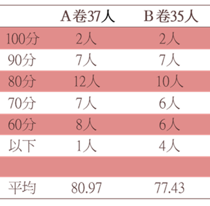
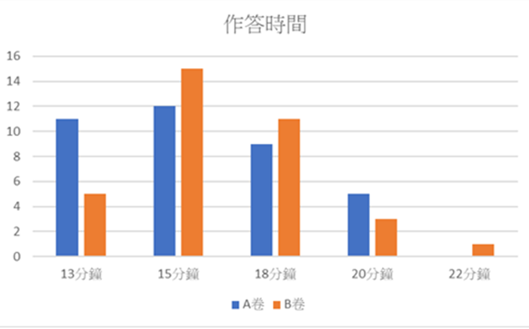
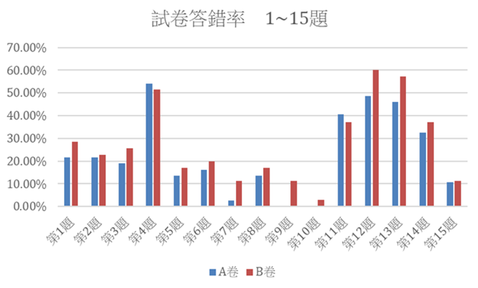
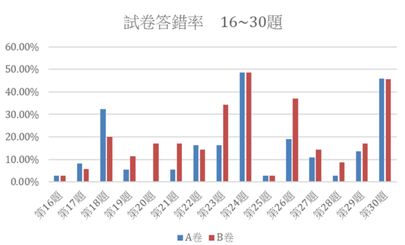

研究動機
亞洲社會普遍重視學習評量結果，父母、老師、學生對考試成績非常重視。考試成績越高，意味著未來的成就越卓越，如何保持在最佳狀態下完成考卷就變成影響考試成績相當重要的一環。以學生的角度而言，每在考試時，往往會遇到一些考卷在出題或是編排上找出一些瑕疵，常影響學生在作答時的表現。於是我們想知道在哪種作答條件之下，對學生最有利。我們藉由編排不同的試題方式來探討考卷題目編排與學生作答反應之關係，篇排的好壞對成績有沒有影響?並提出學生在寫哪種排版考卷，所反應出的表現最好。
研究目的
希望自己能拿高分
探討學生面對不同編排考卷時的作答速率
探討不同排版方式對學生的成績高低比較
提出對於試卷編制者排版方式改良的建議
研究方法
設計出相同內容但排版不同的考卷，每份試卷有三十題，Ａ卷為題目整齊、清楚，沒有跨頁的試卷；Ｂ卷是隨機挑出五題，把題目或選項調亂難以作答。兩種試卷分發給三個班，每個班級都會拿到Ａ、Ｂ卷，班級座位前三排拿到Ａ卷，後三排拿Ｂ卷。
研究結果
分數差異

時間長短

答錯率


討論
結論
不論是施測時間還是分數，排版好壞都會影像學生的考試表現，尤其是低分群的學生，高分群較無明顯影響。
希望未來有更多學者可以作進一步的研究，讓試卷編排者注意排版的重要性，尤其是校內定期評量，能更注意排版的問題，幫助到低分群的學生提高成績。